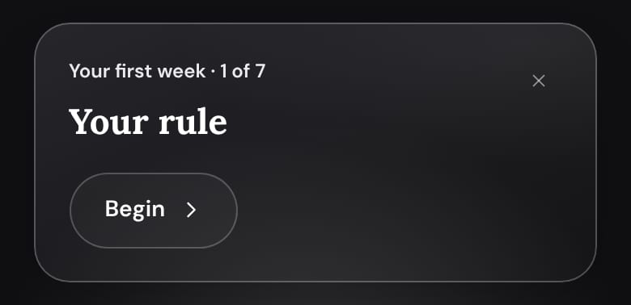
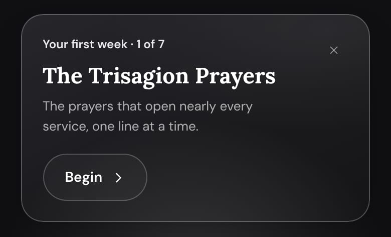
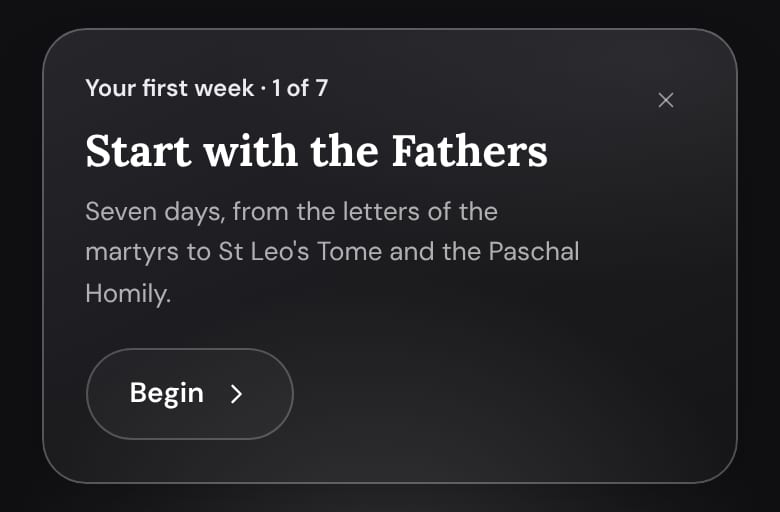

The reader web
Every screen, section and way a new reader can take, from the first open to the road's door.
Every road at once
Light one road to read it step by step. All together, this is what the questions can make.
The Practicing road
3,336 of the 30,024 sets of answers land here. The reader's picks then arrange the week: 675 different first weeks come from this road, over 16 pages.
Who lands here
| First answer | Second answer |
|---|---|
| Orthodox | Practicing |
| Prefer not to say | Practicing |
| Skipped | Practicing |
The road's own week

After the week
A week after the questions, a reader without Plus can meet one card on Today, once: Remember the verse. The verses you save come back, one small card a day, until you know them by heart. It is a live test: one arm meets the card, the other meets only the locks.
The Returning road
1,112 of the 30,024 sets of answers land here. The reader's picks then arrange the week: 676 different first weeks come from this road, over 16 pages.
Who lands here
| First answer | Second answer |
|---|---|
| Orthodox | Coming back |
The road's own week

After the week
A week after the questions, a reader without Plus can meet one card on Today, once: Reading plans. The Psalter by kathisma, the four Gospels a chapter a day and Proverbs in a month, with your place kept and your streak counted. It is a live test: one arm meets the card, the other meets only the locks.
The Catechumen road
8,896 of the 30,024 sets of answers land here. The reader's picks then arrange the week: 472 different first weeks come from this road, over 14 pages.
Who lands here
| First answer | Second answer |
|---|---|
| Orthodox | Preparing to be received |
| Catholic | I have started going |
| Protestant | I have started going |
| Another Christian tradition | I have started going |
| Another faith | I have started going |
| Just curious | I have started going |
| Prefer not to say | Learning |
| Skipped | Learning |
The road's own week

After the week
A week after the questions, a reader without Plus can meet one card on Today, once: Reading plans. The Psalter by kathisma, the four Gospels a chapter a day and Proverbs in a month, with your place kept and your streak counted. It is a live test: one arm meets the card, the other meets only the locks.
The Catholic road
2,224 of the 30,024 sets of answers land here. The reader's picks then arrange the week: 472 different first weeks come from this road, over 14 pages.
Who lands here
| First answer | Second answer |
|---|---|
| Catholic | Not yet |
| Catholic | Skipped |
The road's own week

After the week
A week after the questions, a reader without Plus can meet one card on Today, once: Follow history year by year. The great events told step by step, with a map that moves to each place as you read. It is a live test: one arm meets the card, the other meets only the locks.
The Protestant road
2,224 of the 30,024 sets of answers land here. The reader's picks then arrange the week: 516 different first weeks come from this road, over 17 pages.
Who lands here
| First answer | Second answer |
|---|---|
| Protestant | Not yet, with any other first pick, or none (the Bible lean) |
| Protestant | Not yet, when the first pick is The saints' lives, The Fathers' writings, The councils, Church history, The Liturgy or Fasts and feasts (the liturgical lean) |
| Protestant | Skipped, with any other first pick, or none (the Bible lean) |
| Protestant | Skipped, when the first pick is The saints' lives, The Fathers' writings, The councils, Church history, The Liturgy or Fasts and feasts (the liturgical lean) |
The week, Bible lean
The week, liturgical lean

After the week
A week after the questions, a reader without Plus can meet one card on Today, once: Cross-references. See the passages a verse echoes across both Testaments, the Psalms and the prophets among them, with their words beside it, and open any of them in one tap. It is a live test: one arm meets the card, the other meets only the locks.
The Christian road
2,224 of the 30,024 sets of answers land here. The reader's picks then arrange the week: 602 different first weeks come from this road, over 15 pages.
Who lands here
| First answer | Second answer |
|---|---|
| Another Christian tradition | Not yet |
| Another Christian tradition | Skipped |
The road's own week

After the week
A week after the questions, a reader without Plus can meet one card on Today, once: Cross-references. See the passages a verse echoes across both Testaments, the Psalms and the prophets among them, with their words beside it, and open any of them in one tap. It is a live test: one arm meets the card, the other meets only the locks.
The Seeker road
1,212 of the 30,024 sets of answers land here. The reader's picks then arrange the week: 129 different first weeks come from this road, over 13 pages.
Who lands here
| First answer | Second answer |
|---|---|
| Just curious | Not yet, when the first pick is The Fathers' writings, The councils or Church history |
| Just curious | Skipped, when the first pick is The Fathers' writings, The councils or Church history |
| Prefer not to say | Completely new, when the first pick is The Fathers' writings, The councils or Church history |
| Skipped | Completely new, when the first pick is The Fathers' writings, The councils or Church history |
The road's own week

After the week
A week after the questions, a reader without Plus can meet one card on Today, once: Follow history year by year. The great events told step by step, with a map that moves to each place as you read. It is a live test: one arm meets the card, the other meets only the locks.
The Newcomer road
5,460 of the 30,024 sets of answers land here. The reader's picks then arrange the week: 315 different first weeks come from this road, over 14 pages.
Who lands here
| First answer | Second answer |
|---|---|
| Another faith | Not yet |
| Another faith | Skipped |
| Just curious | Not yet, with any other first pick, or none |
| Just curious | Skipped, with any other first pick, or none |
| Prefer not to say | Completely new, with any other first pick, or none |
| Skipped | Completely new, with any other first pick, or none |
The road's own week

After the week
No card on this road. This reader meets Plus only at the locks.
Where the roads cross
The pages that hold the most threads. Change one of these, and that many of the 9 hand-written weeks change with it.
What each pick brings
What are you looking for? The first pick can decide the road. Every pick brings its own page into the week.
| The pick | The page it brings |
|---|---|
| The saints' lives | The lives of the saints |
| The Fathers' writings | Start with the Fathers |
| The Gospels | The Gospel of John |
| The councils | The councils |
| Church history | The Church's history |
| What the Orthodox believe | Start here, The Nicene Creed or What the Orthodox believe |
| The Liturgy | Your first Liturgy, The Trisagion Prayers or The Church's year |
| Fasts and feasts | Fasts and feasts |
| A rule of prayer | A simple morning rule or Morning prayers |
| Daily quiet | The Jesus Prayer |
| Study | The Gospel of John or The Book of Job |
Why it is drawn this way
| The choice | Why, and what it does for you |
|---|---|
| A web on the app's night sky | It is the app's own look, and threads on a night read as the constellation they are. It is the one thing that leads on the page, so it is the one thing on the night. |
| Top to bottom, a strand for each road | A phone is tall. A road is followed down with the thumb, a day at a time, the way a reader walks it. |
| Two sizes: all of it, and up close | All of it shows the shape you asked to see, with only its four marks to read. Up close shows the words. Threads keep their weight at both. |
| One road lit at a time | 30,024 sets of answers cannot be read at once. One lit thread can, with the rest left faint and still readable. |
| Every plate in the app's own words | A plate says what the screen or page says in the app, and its small line names its section, so nothing is renamed and nothing has to be translated back. |
| Drawn by a script, from the rules | The test that holds the reader map writes this web's data. When a rule changes, the test fails until the web is drawn again, so the web cannot say what the app does not do. |
| Plates are not buttons | A plate is too small for a thumb when all of it is shown. The choices under the web are 44px buttons, and they do the choosing. |